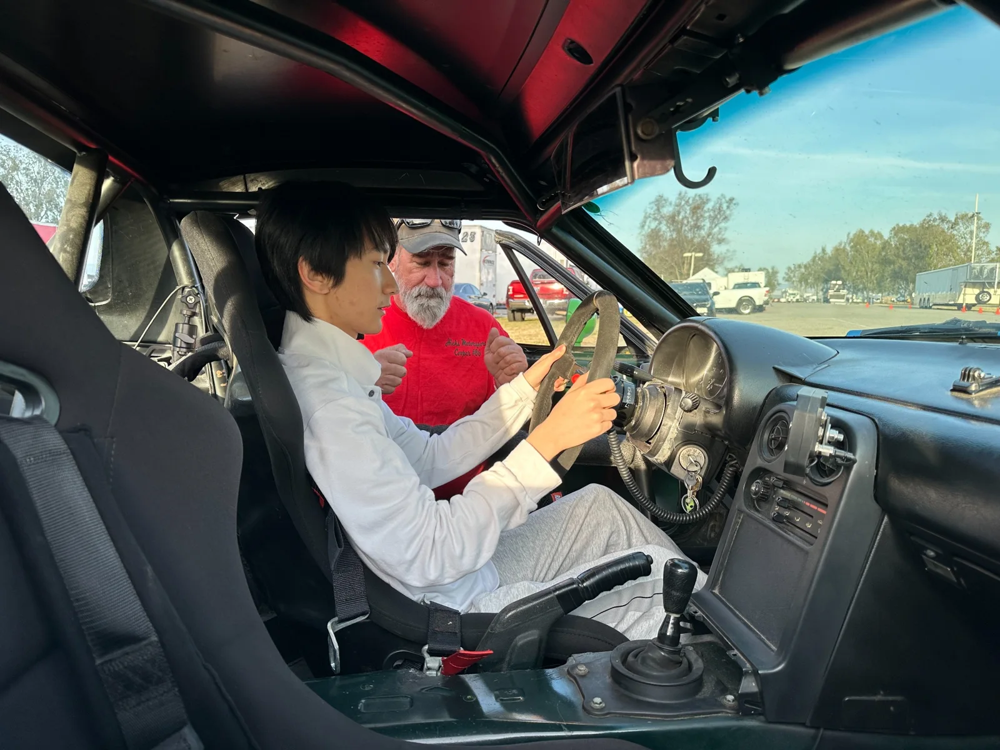
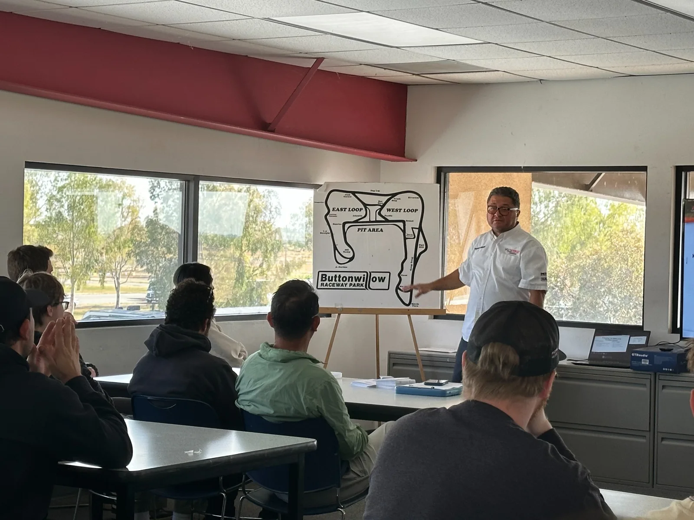
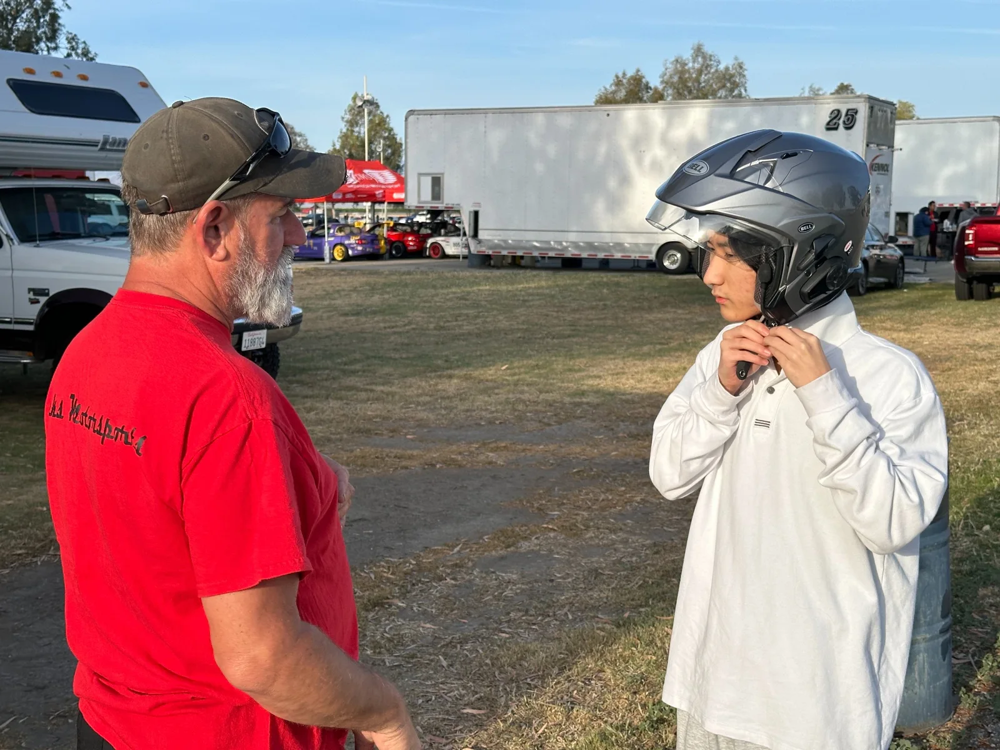
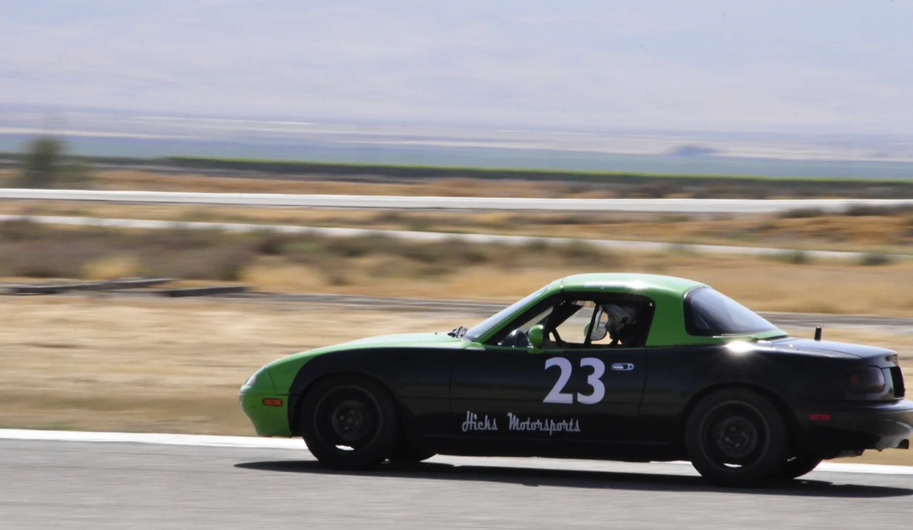
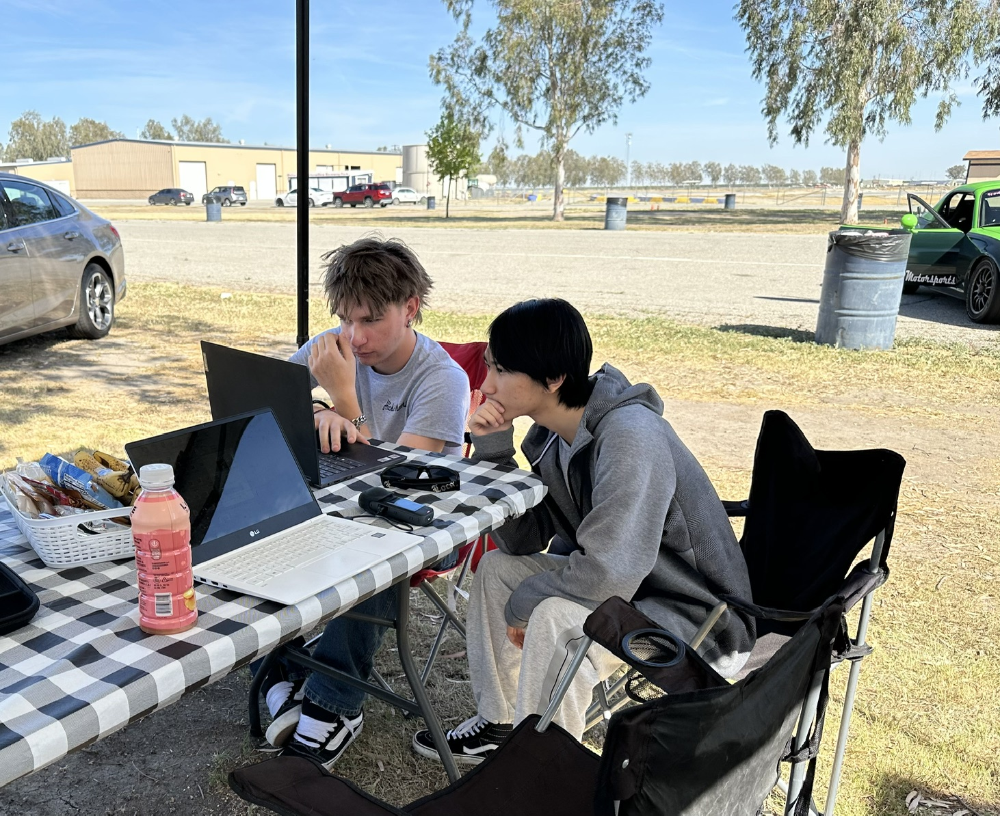
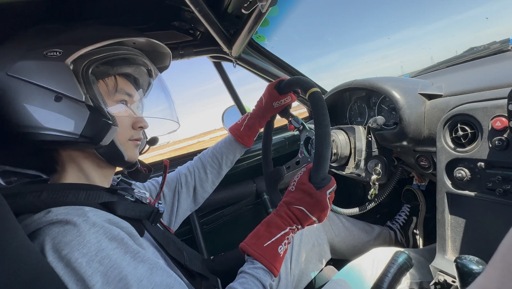
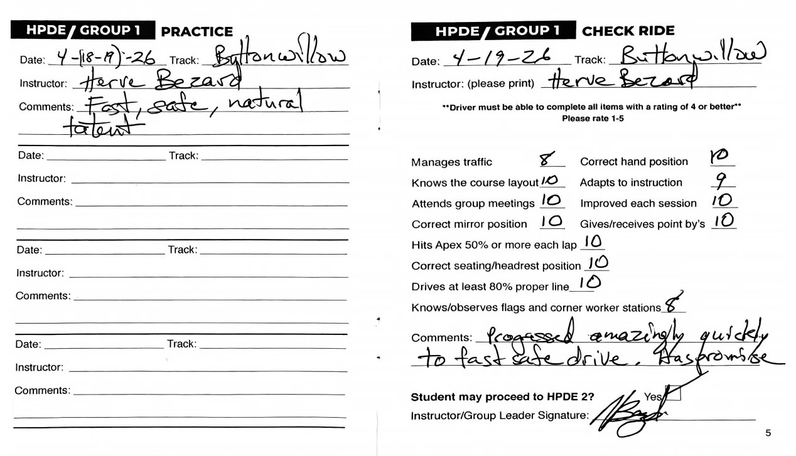

01 / MOTORSPORT
Learn. Drive.
Measure.
My first track experience taught me how much I still had to learn about the car, the driver, and the decisions behind each lap.

BUTTONWILLOW · APRIL 2026
From instruction to independent analysis.
I started with classroom instruction and coaching in the car, then progressed to driving independently. I learned braking points and racing lines through practice, but I also began to notice how difficult it was to judge a lap by feel alone.
During training, I began to realize that top speed alone did not determine my lap time. Corner speed, especially exit speed, mattered. I also noticed that reaching my usual upshift RPM sooner after a corner could help me accelerate along the following straight. This was a driving observation, not a measured test of an earlier shift point.
After driving, I explored the AiM data provided by Hicks Motorsports. Cooper Hicks had coached me on the uphill U-turn line; AI tools later helped visualize the paths and their speed and timing values. I proposed the question of how the line related to exit speed. The two selected April 20 laps differ by 7.401 seconds, but I still need a controlled comparison to test that relationship.
Explore the data ↗FEATURED / TRACK VIDEOS
Featured track videos
These two clips show different sides of the same learning process: working on a consistent lap and reacting when the rear of the car unexpectedly stepped out. Both gave me something to review afterward.








ON TRACK / VIDEO
Driving footage
NEXT / THE ENGINEERING QUESTION